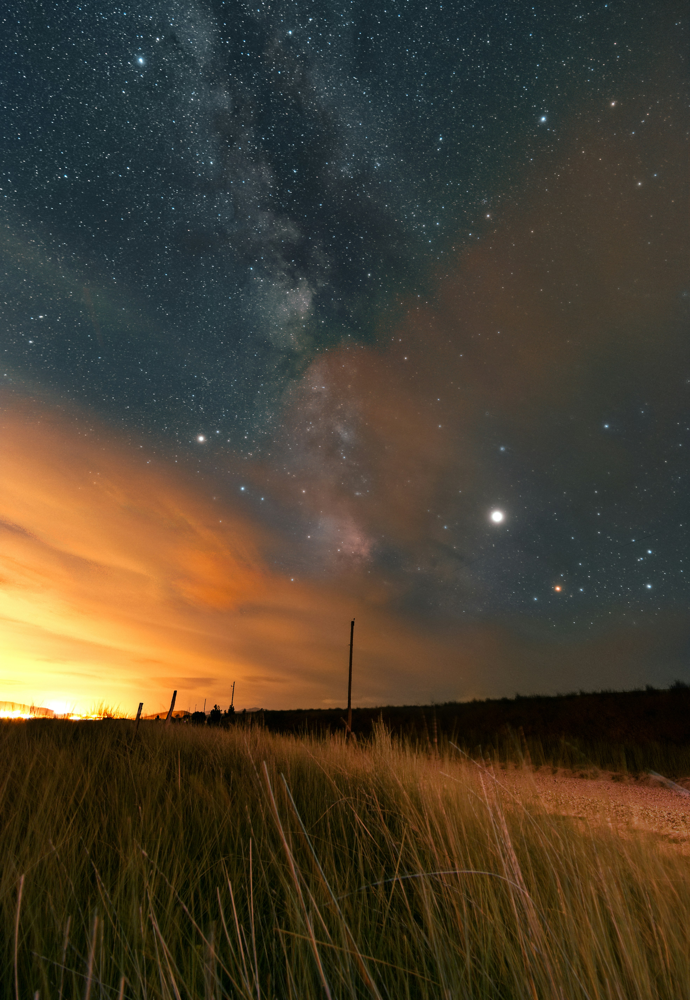
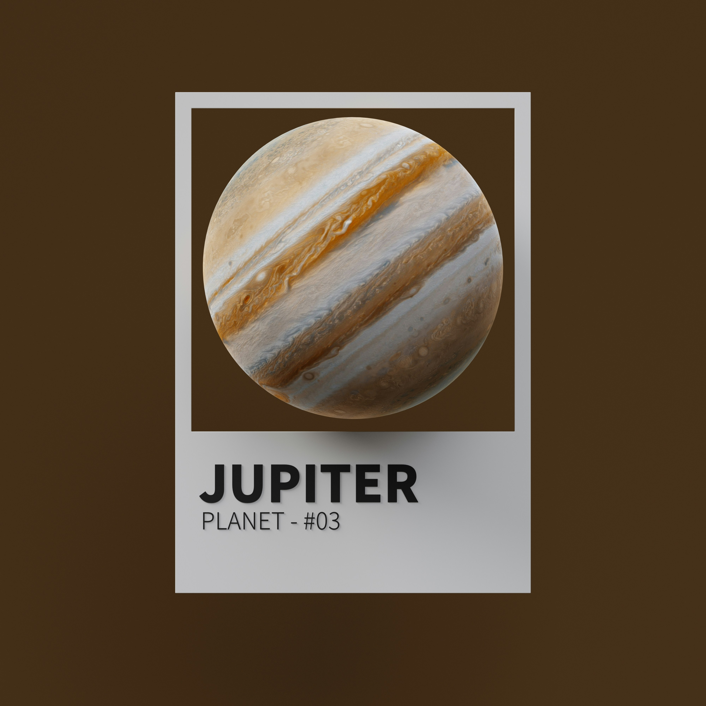
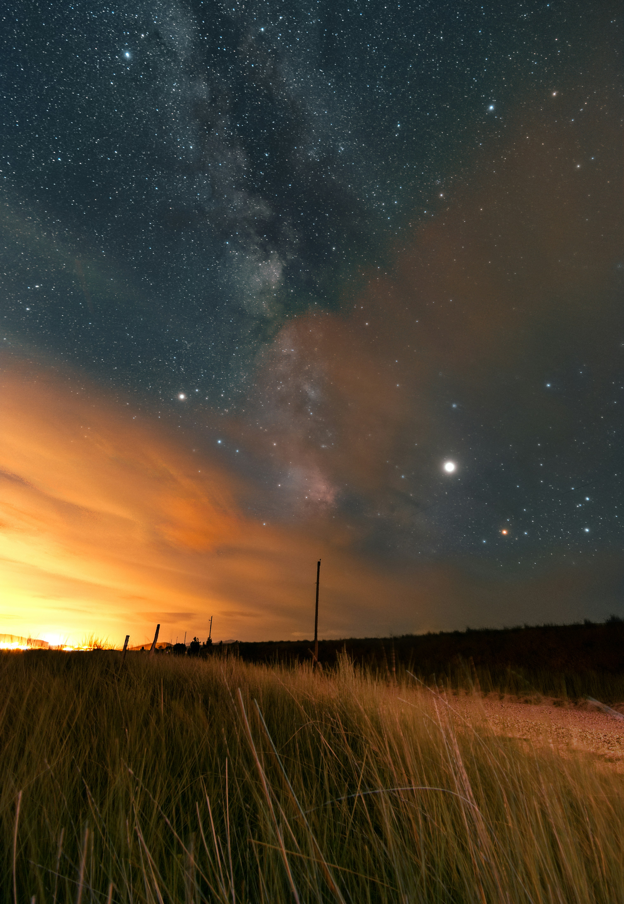
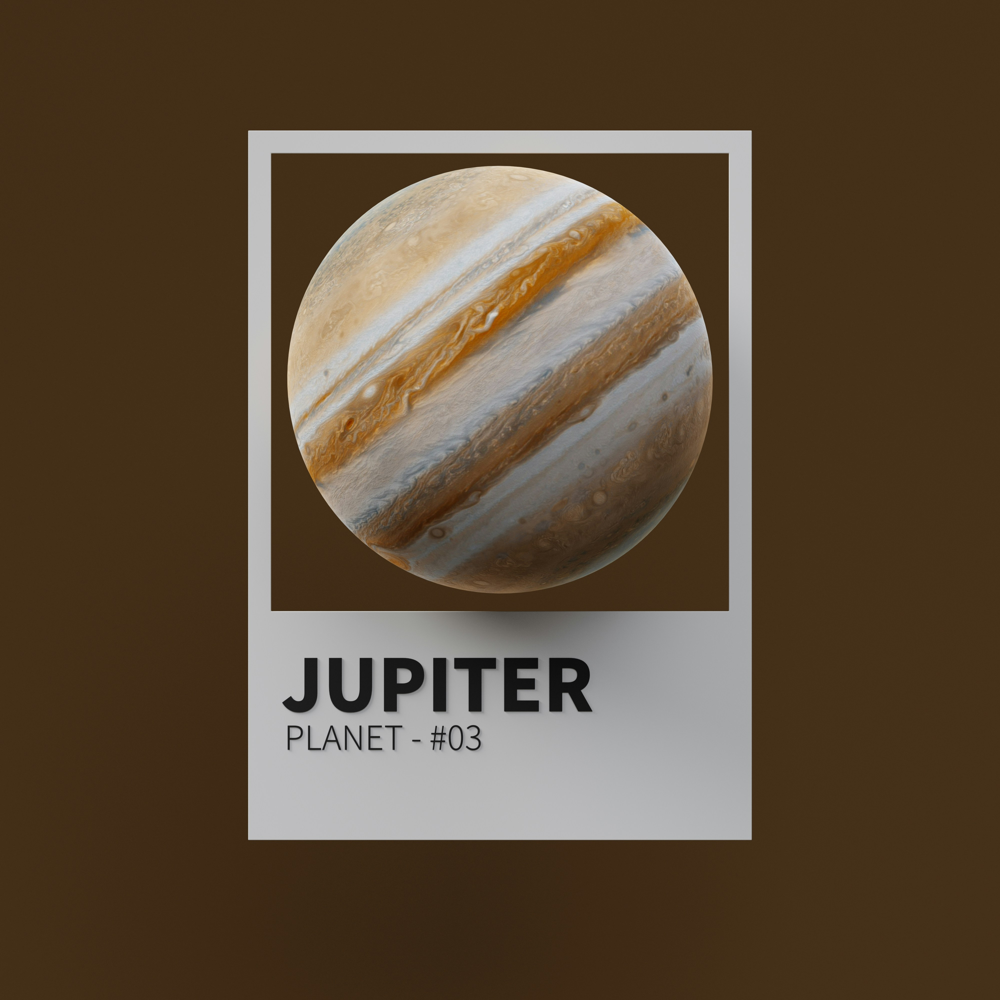

Jupiter
Jupiter's signature stripes and swirls are actually cold, windy clouds of ammonia and water, floating in an atmosphere of hydrogen and helium. The dark orange stripes are called belts, while the lighter bands are called zones, and they flow east and west in opposite directions. Jupiter’s iconic Great Red Spot is a giant storm bigger than Earth that has raged for hundreds of years. The king of planets was named for Jupiter, king of the gods in Roman mythology. Most of its moons are also named for mythological characters, figures associated with Jupiter or his Greek counterpart, Zeus.
Jupiter is a world of extremes. It's the largest planet in our solar system – if it were a hollow shell, 1,000 Earths could fit inside. It's also the oldest planet, forming from the dust and gases left over from the Sun's formation 4.6 billion years ago. But it has the shortest day in the solar system, taking about 9.9 hours to spin around once on its axis.

 


